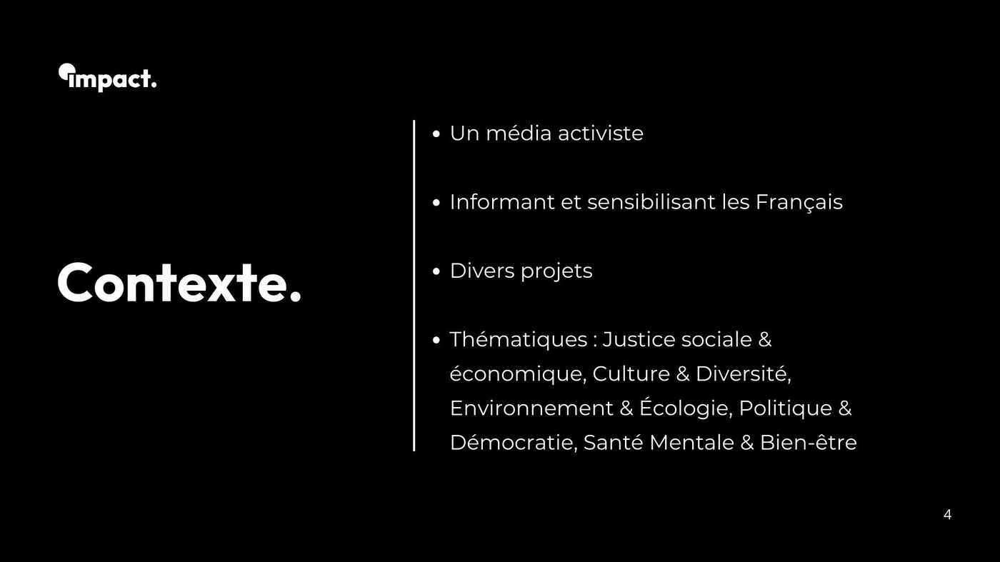
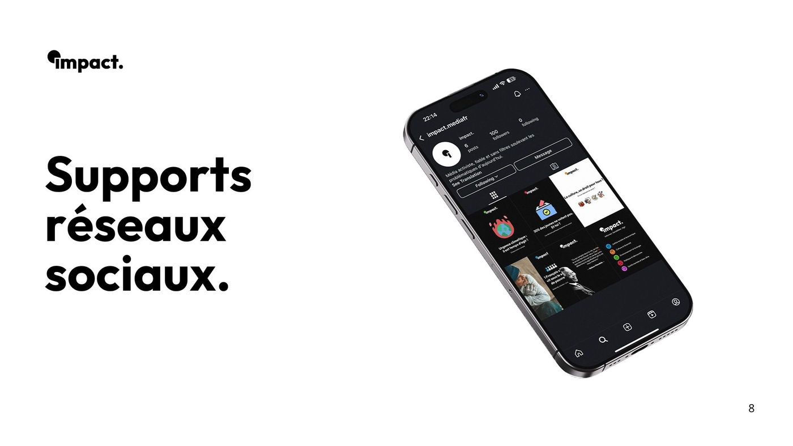
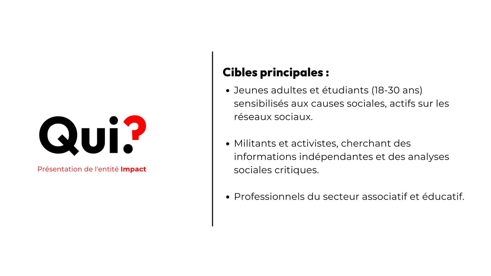
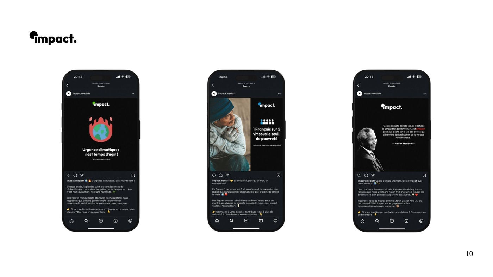
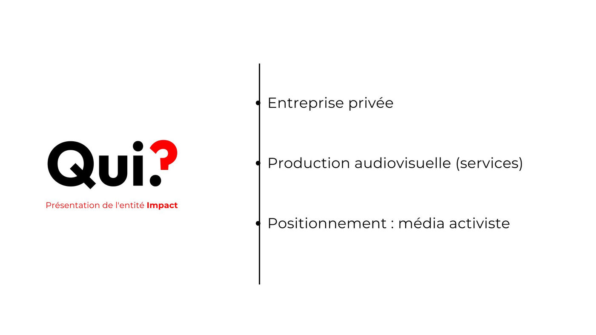
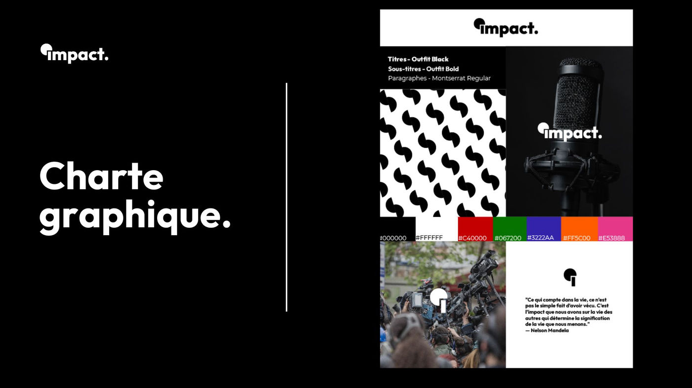

COMMUNICATION
Impact est un média activiste en production audiovisuelle. Il informe et sensibilise autour de thématiques comme la justice sociale, l'écologie, la diversité, la démocratie et la santé mentale. Destiné aux jeunes adultes, militants et acteurs associatifs, il adopte un ton direct, audacieux et sans filtre. Sa communication passe par les réseaux sociaux, un site internet et des expositions gratuites, avec pour mission de rendre les luttes visibles et accessibles.
Stratégie de communication





